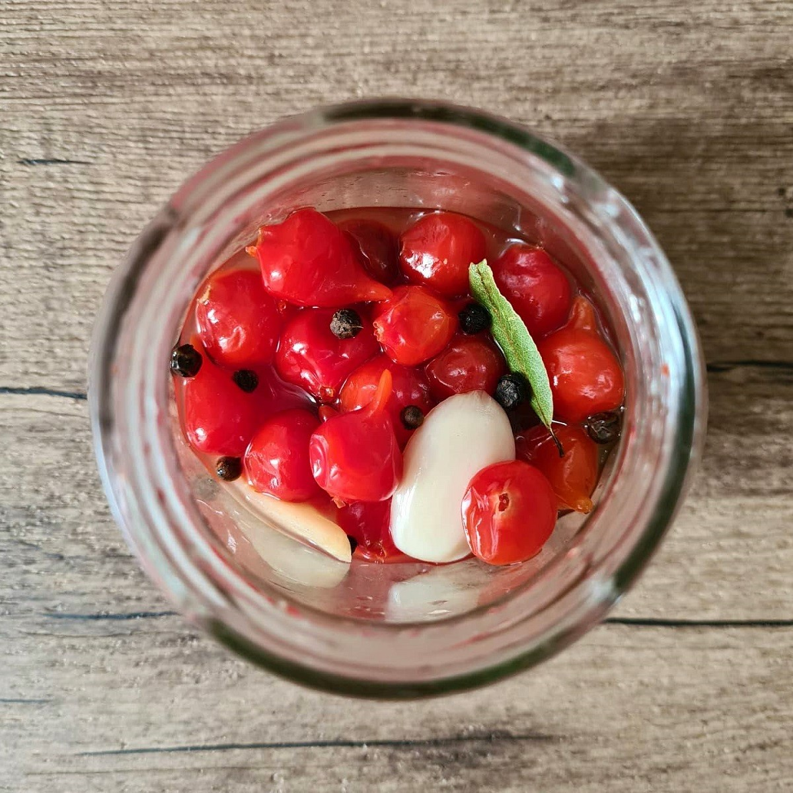

olá estamos de novo aqui, mas agora para falar sobre a biologia
Agora vamos ver as areas da biologia e para que serve cada uma delas!


A Biologia é a área de estudo da vida e de todos os tipos de seres vivos existentes, desde microscópicos, como bactérias, até os macroscópicos, como os animais, além das interações dos organismos com o ambiente e entre si, a reprodução e a evolução das espécies.
A Biotecnologia Verde pode ser definida como a aplicação de técnicas biotecnológicas em plantas, com o objetivo de modificar características das mesmas. Seja no sentido de aumentar a quantidade de nutrientes, ou conferir algum tipo de resistência, inúmeras características são almejadas quando se trabalha com Biotec verde. Mas, diferentemente da biologia molecular e da engenharia genética, o melhoramento de plantas é um estudo antigo, datando de 10 mil anos, quando os seres humanos deixaram de ser nômades e passaram a selecionar as melhores plantas para o seu consumo..
existe milhares de pratos feitos com essa variedade, como o famoso quiche de frango com pimenta biquinho:

outras variedades como o delicioso bolinho de arroz com pimenta biquinho:

e outras milhares de variedades como: Antepasto de abobrinha com pimenta biquinho:

OU
a conserva de pimenta biquinho.
 A biologia da planta pimenta biquinho:e sobre a biologia da planta?
o nome biologico da pimenta biquinho é Capscum chinense e ela é da família das Solanaceae
- Ecologia: espécie bastante utilizada na culinária e, devido à suavidade de suas pimentinhas, é bastante popular até mesmo in natura. Deve ser cultivada a meia sombra;
- Porte: herbácea a subarbusto ramificado, de pequeno porte - normalmente menos de 50 cm de altura - sustentado por ramos verdes, fotossintetizantes e maleáveis.
- Folhagem: folhas verde-escuras, arredondadas a lanceoladas, marcadas por nervuras aparentes e ápice agudo;
- Floração: flores brancas, ligeiramente pendentes, típicas do gênero;
- Frutificação: frutos de relevância econômica, já que servem de tempero ou na composição de saladas, e até mesmo paisagística, em formato de gota , predominantemente vermelhos, mas também amarelados, alaranjados e verdes. Predominam na copinha da planta em alguns momentos e têm potencial de criar fortes contrastes com folhagens verdes;